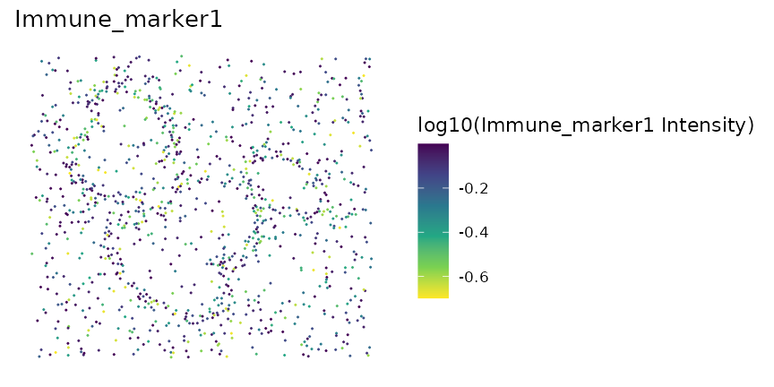
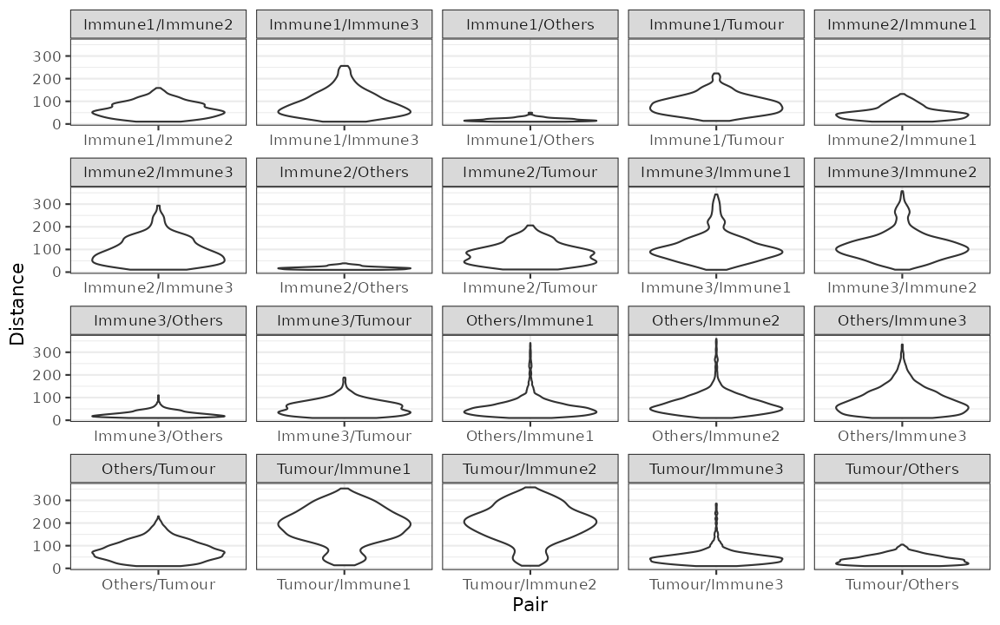

Overview of the SPIAT package
Anna Trigos, Yuzhou Feng, Tianpei Yang, Mabel Li, John Zhu, Volkan Ozcoban, Maria Doyle
24 May 2022
Source:vignettes/introduction.Rmd
introduction.RmdBasics
Introduction
SPIAT (Spatial Image Analysis of Tissues) is an R package with a suite of data processing, quality control, visualization, data handling and data analysis tools. SPIAT is compatible with data generated from single-cell spatial proteomics platforms (e.g. OPAL, CODEX, MIBI). SPIAT reads spatial data in the form of X and Y coordinates of cells, marker intensities and cell phenotypes.
SPIAT includes six analysis modules that allow visualization, calculation of cell colocalization, categorization of the immune microenvironment relative to tumor areas, analysis of cellular neighborhoods, and the quantification of spatial heterogeneity, providing a comprehensive toolkit for spatial data analysis.
An overview of the functions available is shown in the figure below.

Installing SPIAT
SPIAT is a R package available via the Bioconductor repository for packages. You can install the lasted development version from Github. You can install SPIAT using the following commands in your R session:
## Check that you have a valid Bioconductor installation
BiocManager::valid()
if (!requireNamespace("BiocManager", quietly = TRUE)) {
install.packages("BiocManager")
}
BiocManager::install("SPIAT")
## install from GitHub
install.packages("devtools") # if you don't have devtools installed
devtools::install_github("TrigosTeam/SPIAT", ref = "main")Citing SPIAT
We hope that SPIAT will be useful for your research. Please use the following information to cite the package and the overall approach. Thank you!
## Citation info
citation("SPIAT")
#>
#> To cite package 'SPIAT' in publications use:
#>
#> Trigos A, Feng Y, Yang T, Li M, Zhu J, Ozcoban V, Doyle M (2022).
#> _SPIAT: Spatial Image Analysis of Cells in Tissues_. R package
#> version 0.99.0, <https://trigosteam.github.io/SPIAT/>.
#>
#> Yang T, Ozcoban V, Pasam A, Kocovski N, Pizzolla A, Huang Y, Bass G,
#> Keam S, Neeson P, Sandhu S, Goode D, Trigos A (2020). "SPIAT: An R
#> package for the Spatial Image Analysis of Cells in Tissues."
#> _bioRxiv_. doi:10.1101/2020.05.28.122614
#> <https://doi.org/10.1101/2020.05.28.122614>.
#>
#> To see these entries in BibTeX format, use 'print(<citation>,
#> bibtex=TRUE)', 'toBibtex(.)', or set
#> 'options(citation.bibtex.max=999)'.Tutorial
Reading in data and basic data formatting in SPIAT
First we load the SPIAT library.
format_image_to_sce is the main function to read in data to SPIAT.format_image_to_sce creates a SingleCellExperiment object which is used in all subsequent functions. The key data points of interest for SPIAT are cell coordinates, marker intensities and cell phenotypes for each cell.
format_image_to_sce has specific options to read in data generated from InForm, HALO, Visium 10X Genomics, CODEX and cell profiler. However, we advice pre-formatting the data before input to SPIAT to that accepted by the ‘general’ option (shown below). This is due to often inconsistencies in the column names or data formats across different versions or as a result of different user options when using the other platforms.
Reading in data through the ‘general’ option (RECOMMENDED)
Format “general” allows you to input a matrix of intensities (intensity_matrix), and a vector of phenotypes, which should be in the same order in which they appear in the intensity_matrix. They must be of the form of marker combinations (e.g. “CD3,CD8”), as opposed to cell names (e.g. “cytotoxic T cells”), as SPIAT does matching with the marker names. If no phenotypes are available, then a vector of NA can be used as input. You also need to provide seperate vectors with the X and Y coordinates of the cells (coord_x and coord_y). The cells must be in the same order as in the intensity_matrix. If you have Xmin, Xmax, Ymin and Ymax columns, we advise calculating the average to obtain a single X and Y coordinate, which you can then use as input to coord_x and coord_y.
Here we use some dummy data to illustrate how to read “general” format.
# Construct a dummy marker intensity matrix
## rows are markers, columns are cells
intensity_matrix <- matrix(c(14.557, 0.169, 1.655, 0.054,
17.588, 0.229, 1.188, 2.074,
21.262, 4.206, 5.924, 0.021), nrow = 4, ncol = 3)
# define marker names as rownames
rownames(intensity_matrix) <- c("DAPI", "CD3", "CD4", "AMACR")
# define cell IDs as colnames
colnames(intensity_matrix) <- c("Cell_1", "Cell_2", "Cell_3")
# Construct a dummy metadata (phenotypes, x/y coordinates)
# the order of the elements in these vectors correspond to the cell order
# in `intensity matrix`
phenotypes <- c("OTHER", "AMACR", "CD3,CD4")
coord_x <- c(82, 171, 184)
coord_y <- c(30, 22, 38)
general_format_image <-
format_image_to_sce(format = "general", intensity_matrix = intensity_matrix,
phenotypes = phenotypes, coord_x = coord_x, coord_y = coord_y)
#> Note: 4 rows removed due to NA intensity values.The formatted image now contains phenotypes location and marker intensity information of 3 cells. Note that if users want to define cell IDs, the cell IDs should be defined as the colnames of the intensity matrix. The order of the rows of the metadata should correspond to the order of the colnames of the intensity matrix. The function will automatically assign rownames to the metadata.
Use the following codes to inspect the information.
# metadata
colData(general_format_image)
#> DataFrame with 3 rows and 3 columns
#> Phenotype Cell.X.Position Cell.Y.Position
#> <character> <numeric> <numeric>
#> Cell_1 OTHER 82 30
#> Cell_2 AMACR 171 22
#> Cell_3 CD3,CD4 184 38
# marker intensities
assay(general_format_image)
#> Cell_1 Cell_2 Cell_3
#> DAPI 14.557 17.588 21.262
#> CD3 0.169 0.229 4.206
#> CD4 1.655 1.188 5.924
#> AMACR 0.054 2.074 0.021Reading in data pre-formatted by other software
If you prefer to use data directly generated from InForm, HALO, Visium, CODEX and cellprofiler, these can be specified as options in format_image_to_sce.
For reading in input generated with Visium, CODEX or cellprofiler see the help (?format_image_to_sce).
Reading in data from InForm
To read in data from InForm, you need the table file generated by InForm, the list of markers of interest, and their location in the cell. format_image_to_sce uses the Cell X Position and Cell Y Position columns and the Phenotype column in the InForm raw data. The phenotype of a cell can be a single marker, for example, “CD3”, or a combination of markers, such as “CD3,CD4”. As a convention, SPIAT assumes that cells marked as “OTHER” refer to cells positive for DAPI but no other marker. The phenotypes must be based on the markers (e.g. CD3,CD4), rather than names of cells (e.g. cytotoxic T cells). The names of the cells can be added later using the define_celltypes function. The following cell properties columns are also required to be present in the InForm input file: Entire Cell Area (pixels), Nucleus Area (pixels), Nucleus Compactness, Nucleus Axis Ratio, and Entire Cell Axis Ratio. If not present in the users’ data, these can be columns with NAs.
To read in InForm data, you need to specify the following parameters:
-
format: “INFORM” -
path: path to the raw InForm image data file -
markers: names of markers used in the OPAL staining. These must be in the same order as the marker columns in the input file, and for InForm must match the marker name used in the input file. One of the markers must be DAPI. -
locations: locations of the markers in cells, either Nucleus, Cytoplasm or Membrane. These must be in the order of the markers. The locations are used to auto-detect the intensity (and dye) columns.
A small example of InForm input is included in SPIAT containing dummy marker intensity values and all the other required columns (see below). This example file is just for demonstrating importing a raw data file, later in the Example data section we will load a larger preformatted dataset. Users are welcome to use this formatting option if it is closer to the format of their files.
raw_inform_data <- system.file("extdata", "tiny_inform.txt.gz", package = "SPIAT")
head(raw_inform_data)
#> [1] "/home/runner/work/_temp/Library/SPIAT/extdata/tiny_inform.txt.gz"
markers <- c("DAPI", "CD3", "PD-L1", "CD4", "CD8", "AMACR")
locations <- c("Nucleus", "Cytoplasm", "Membrane", "Cytoplasm", "Cytoplasm", "Cytoplasm") #maybe you no longer need this if we are using the general format?
formatted_image <- format_image_to_sce(
format="INFORM",
path=raw_inform_data,
markers=markers,
locations=locations)Alternatively, rather than specifying the locations, you can also specify the specific intensity columns with intensity_columns_interest as shown below.
raw_inform_data <- system.file("extdata", "tiny_inform.txt.gz", package = "SPIAT")
markers <- c("DAPI", "CD3", "PD-L1", "CD4", "CD8", "AMACR")
intensity_columns_interest <- c(
"Nucleus DAPI (DAPI) Mean (Normalized Counts, Total Weighting)",
"Cytoplasm CD3 (Opal 520) Mean (Normalized Counts, Total Weighting)",
"Membrane PD-L1 (Opal 540) Mean (Normalized Counts, Total Weighting)",
"Cytoplasm CD4 (Opal 620) Mean (Normalized Counts, Total Weighting)",
"Cytoplasm CD8 (Opal 650) Mean (Normalized Counts, Total Weighting)",
"Cytoplasm AMACR (Opal 690) Mean (Normalized Counts, Total Weighting)"
)
formatted_image <- format_image_to_sce(
format="INFORM",
path=raw_inform_data,
markers=markers,
intensity_columns_interest=intensity_columns_interest)
class(formatted_image) # The formatted image is a SingleCellExperiment object
dim(colData(formatted_image))
dim(assay(formatted_image))Reading in data from HALO
To read in data from HALO, you need the table file generated by HALO, which lists marker intensities. The biggest difference between InForm and HALO formats is the coding of the cell phenotypes. While InForm encodes phenotypes as the combination of positive markers (e.g. “CD3,CD4”), HALO uses a binary system of 1 if the cell is positive for the marker and 0 otherwise.
format_image_to_sce collapses HALO encoded phenotypes into an INFORM-like format to create the Phenotype column. For example, if HALO has assigned a cell a marker status of 1 for CD3 and 1 for CD4, SPIAT will give it the Phenotype “CD3,CD4”. Cells that have a marker status of 1 for DAPI but no other marker, are given the phenotype “OTHER”.
format_image_to_sce takes the average of the HALO X min and X max columns for each cell to create the Cell.X.Position column. It takes the average of the Y min and Y max to create the Cell.Y.Position column.
To read in HALO data, you need to specify the following parameters:
-
format: “HALO” -
path: path to the raw HALO image data file -
markers: names of markers used in the OPAL staining. These must be in the same order as the marker columns in the input file, and for HALO must match the marker name used in the input file. One of the markers must be DAPI. -
locations: locations of the markers in cells, either Nucleus, Cytoplasm or Membrane. These must be in the order of the markers. The locations are used to auto-detect the intensity (and dye) columns.
Users can specify the locations to auto-detect the columns as shown above for InForm. Alternatively, if users want to specify the columns instead, you can do so with intensity_columns_interest, as shown in the example below. Note that then you also must specify the dye_columns_interest. The following cell properties columns are also required to be present in the HALO input file: Cell Area, Nucleus Area, Cytoplasm Area. If these are not present in the user’s data, we recommend adding these columns with NA values.
raw_halo_data <- system.file("extdata", "tiny_halo.csv.gz", package = "SPIAT")
markers <- c("DAPI", "CD3", "PDL-1", "CD4", "CD8", "AMACR")
intensity_columns_interest <- c("Dye 1 Nucleus Intensity",
"Dye 2 Cytoplasm Intensity",
"Dye 3 Membrane Intensity",
"Dye 4 Cytoplasm Intensity",
"Dye 5 Cytoplasm Intensity",
"Dye 6 Cytoplasm Intensity")
dye_columns_interest <- c("Dye 1 Positive Nucleus",
"Dye 2 Positive Cytoplasm",
"Dye 3 Positive Membrane",
"Dye 4 Positive Cytoplasm",
"Dye 5 Positive Cytoplasm",
"Dye 6 Positive Cytoplasm")
formatted_image <- format_image_to_sce(
format="HALO",
path=raw_halo_data,
markers=markers,
intensity_columns_interest=intensity_columns_interest,
dye_columns_interest=dye_columns_interest
)
class(formatted_image) # The formatted image is a SingleCellExperiment object
dim(colData(formatted_image))
dim(assay(formatted_image))Inspecting the SingelCellExperiment object
Structure of a SPIAT SingleCellExperiment object
In this vignette we will use an InForm data file that’s already been formatted for SPIAT with format_image_to_sce, which we can load with data.
data("simulated_image")This is SingleCellExperiment format.
class(simulated_image)
#> [1] "SingleCellExperiment"
#> attr(,"package")
#> [1] "SingleCellExperiment"This example data has 5 markers and 4951 cells.
dim(simulated_image)
#> [1] 5 4951assay stores the intensity level of every marker (rows) for every cell (columns).
# take a look at first 5 columns
assay(simulated_image)[, 1:5]
#> Cell_1 Cell_2 Cell_3 Cell_4 Cell_5
#> Tumour_marker 4.466925e-01 1.196802e-04 0.235435887 1.125552e-01 1.600443e-02
#> Immune_marker1 1.143640e-05 4.360881e-19 0.120582510 2.031554e-13 1.685832e-01
#> Immune_marker2 1.311175e-15 5.678623e-02 0.115769761 5.840184e-12 9.025254e-05
#> Immune_marker3 6.342341e-09 2.862823e-06 0.053107792 6.289501e-04 4.912962e-13
#> Immune_marker4 2.543406e-04 4.702311e-04 0.005878394 4.582812e-03 2.470984e-03colData stores the phenotype, x and y coordinates, and the cell properties.
# take a look at first 5 rows
colData(simulated_image)[1:5, ]
#> DataFrame with 5 rows and 3 columns
#> Phenotype Cell.X.Position Cell.Y.Position
#> <character> <numeric> <numeric>
#> Cell_1 OTHER 139.7748 86.7041
#> Cell_2 OTHER 77.8672 80.0965
#> Cell_3 OTHER 84.4463 19.2386
#> Cell_4 OTHER 110.1986 5.6560
#> Cell_5 OTHER 167.8956 171.9264We can check what phenotypes are present with print_feature, which will print any specified column in the data.
print_feature(simulated_image, feature_colname = "Phenotype")
#> [1] "OTHER"
#> [2] "Immune_marker1,Immune_marker2"
#> [3] "Tumour_marker"
#> [4] "Immune_marker1,Immune_marker2,Immune_marker4"
#> [5] "Immune_marker1,Immune_marker3"The phenotypes in this example data can be interpreted as follows:
Tumour_marker = cancer cells Immune_marker1,Immune_marker2 = immune cell type 1 Immune_marker1,Immune_marker3 = immune cell type 2 Immune_marker1,Immune_marker2,Immune_marker4 = immune cell type 3 OTHER = other cell types
Nomenclature
In SPIAT We define as markers as proteins whose levels where queried by OPAL, CODEX or another platform.
Examples of markers are “AMACR” for prostate cancer cells, “panCK” for epithelial tumor cells, “CD3” for T cells or “CD20” for B cells.
The combination of markers results in a specific cell phenotype. For example, a cell positive for both “CD3” and “CD4” markers has the “CD3,CD4” cell phenotype.
Finally, we define a cell type as a name assigned by the user to a cell phenotype. For example, a user can name “CD3,CD4” cells as “helper T cells”. We would refer to “helper T cells” therefore as a cell type.
Splitting images
In the case of large images, or images where there are two independent tissue sections, it is recommended to split images into sections defined by the user. This can be performed with image_splitter after format_image_to_sce.
split_image <- image_splitter(simulated_image, number_of_splits=3, plot = FALSE)Predicting cell phenotypes
SPIAT can predict cell phenotypes using marker intensity levels with predict_phenotypes. This can be used to check the phenotypes that have been assigned by InForm and HALO. It can also potentially be used to automate the manual phenotypying performed with InForm/HALO. The underlying algorithm is based on the density distribution of marker intensities. We have found this algorithm to perform best in OPAL data, as well as for identifying clearly distinct cell types from MIBI and CODEX datasets. This algorithm does not take into account cell shape or size, so if these are required for phenotyping, using HALO or InForm or a machine-learning best method is recommended.
predict_phenotypes produces a density plot that shows the cutoff for calling a cell positive for a marker. If the dataset includes phenotypes obtained through another software, this function prints to the console the concordance between SPIAT’s prediction and pre-defined phenotypes as the number of true positives (TP), true negatives (TN), false positives (FP) and false negatives (FN) phenotype assignments. It returns a table containing the phenotypes predicted by SPIAT and the actual phenotypes from InForm/HALO (if available).
predicted_image <- predict_phenotypes(sce_object = simulated_image,
thresholds = NULL,
tumour_marker = "Tumour_marker",
baseline_markers = c("Immune_marker1", "Immune_marker2", "Immune_marker3", "Immune_marker4"),
reference_phenotypes = TRUE)
#> [1] "Tumour_marker"
#> [1] "Immune_marker1"
#> [1] "Immune_marker2"
#> [1] "Immune_marker3"
#> [1] "Immune_marker4"
We can use marker_prediction_plot to plot the predicted cell phenotypes and the ones obtained using HALO or InForm, for comparison.
marker_prediction_plot(predicted_image, marker="Immune_marker1")
The plot shows Immune_marker1+ cells in the tissue. On the left are the Immune_marker1+ cells defined by InForm and on the right are the Immune_marker1+ cells predicted using SPIAT. If this is simulated data, then there are no cells defined by InForm. We can say that on the left we have the phenotypes we had pre-defined and leave it at that.
The next example shows how to replace the original phenotypes with the predicted ones. Note that for this tutorial, we still use the original phenotypes.
predicted_image2 <- predict_phenotypes(sce_object = simulated_image,
thresholds = NULL,
tumour_marker = "Tumour_marker",
baseline_markers = c("Immune_marker1", "Immune_marker2", "Immune_marker3", "Immune_marker4"),
reference_phenotypes = FALSE)Specifying cell types
SPIAT can define cell types with the define_celltypes function. By default the column is called Cell.Type. Note that this needs to be specified by the user.
formatted_image <- define_celltypes(simulated_image,
categories = c("Tumour_marker", "Immune_marker1,Immune_marker2", "Immune_marker1,Immune_marker3",
"Immune_marker1,Immune_marker2,Immune_marker4", "OTHER"),
category_colname = "Phenotype",
names = c("Tumour", "Immune1", "Immune2",
"Immune3", "Others"),
new_colname = "Cell.Type")Quality control
Here we present some quality control steps implemented in SPIAT to check for the quality of phenotyping, help detect uneven staining, and other potential technical artefacts.
Boxplots of marker intensities
Phenotyping of cells can be verified comparing marker intensities of cells labelled positive and negative for a marker. Cells positive for a marker should have high levels of the marker. An unclear separation of marker intensities between positive and negative cells would suggest phenotypes have not been accurately assigned. We can use marker_intensity_boxplot to produce a boxplot for cells phenotyped as being positive or negative for a marker.
marker_intensity_boxplot(formatted_image, "Immune_marker1")
Note that if phenotypes were obtained from software that uses machine learning to determine positive cells, which generally also take into account properties such as cell shape, nucleus size etc., rather than a strict threshold, some negative cells will have high marker intensities, and vice versa. In general, a limited overlap of whiskers or outlier points is tolerated and expected. However, overlapping boxplots suggests unreliable phenotyping.
Scatter plots of marker levels
Uneven marker staining or high background intensity can be identified with plot_cell_marker_levels. This produces a scatter plot of the intensity of a marker in each cell. This should be relatively even across the image and all phenotyped cells. Cells that were not phenotyped as being positive for the particular marker are excluded.
plot_cell_marker_levels(formatted_image, "Immune_marker1")
Heatmaps of marker levels
For large images, there is also the option of ‘blurring’ the image, where the image is split into multiple small areas, and marker intensities are averaged within each. The image is blurred based on the num_splits parameter.
plot_marker_level_heatmap(formatted_image, num_splits = 100, "Tumour_marker")
Identifying incorrect phenotypes
We may see cells with biologically implausible combination of markers present n the input data when using print_feature. For example, cells might be incorrectly typed as positive for two markers that known to not co-occur in a single cell type. Incorrect cell phenotypes may be present due to low cell segmentation quality, antibody ‘bleeding’ from one cell to another or inadequate marker thresholding.
If the number of incorrectly phenotyped cells is small (<5%), we advise simply removing these cells (see below). If it is a higher proportion, we recommend checking the cell segmentation and phenotyping methods, as a more systematic problem might be present.
Removing cells with incorrect phenotypes
If you identify incorrect phenotypes or have any you want to exclude you can use select_phenotypes.
data_subset <- select_celltypes(formatted_image, keep=TRUE,
celltypes = c("Tumour_marker","Immune_marker1,Immune_marker3", "Immune_marker1,Immune_marker2",
"Immune_marker1,Immune_marker2,Immune_marker4"),
feature_colname = "Phenotype")
print_feature(data_subset, feature_colname = "Phenotype")
#> [1] "Immune_marker1,Immune_marker2"
#> [2] "Tumour_marker"
#> [3] "Immune_marker1,Immune_marker2,Immune_marker4"
#> [4] "Immune_marker1,Immune_marker3"In this vignette we will work with all the original phenotypes present in formatted_image.
Dimensionality reduction to identify mi-sclassified cells
We can also check for specific misclassified cells using dimensionality reduction. SPIAT offers tSNE and UMAPs based on marker intensities to visualize cells. Cells of distinct types should be forming clearly different clusters.
The generated dimensionality reduction plots are interactive, and users can hover over each cell and obtain the cell ID. Users can then remove specific misclassified cells.
predicted_image2 <-
define_celltypes(predicted_image2,
categories = c("Tumour_marker", "Immune_marker1,Immune_marker2",
"Immune_marker1,Immune_marker3",
"Immune_marker1,Immune_marker2,Immune_marker4"),
category_colname = "Phenotype",
names = c("Tumour", "Immune1", "Immune2", "Immune3"),
new_colname = "Cell.Type")
# Delete cells with unrealistic marker combinations from the dataset
predicted_image2 <- select_celltypes(predicted_image2, "Undefined",
feature_colname = "Cell.Type", keep = FALSE)
# TSNE plot
g <- dimensionality_reduction_plot(predicted_image2, plot_type = "TSNE", feature_colname = "Cell.Type")Note that dimensionality_reduction_plot only prints a static version of the UMAP or tSNE plot. If the user wants to interact with this plot, they can pass the result to the ggplotly function from the plotly package. Due to the file size restriction, we only show a screenshot of the interactive tSNE plot.
#plotly::ggplotly(g) # uncomment this code to generate the interactive plot
knitr::include_graphics("tSNE1.jpg")The plot shows that there are four clear clusters based on marker intensities. This is consistent with the cell definition from the marker combinations from the “Phenotype” column. (The interactive TSNE plot would allow users to hover the cursor on the misclassified cells and see their cell IDs.) In this example, Cell_3302, Cell_4917, Cell_2297, Cell_488, Cell_4362, Cell_4801, Cell_2220, Cell_3431, Cell_533, Cell_4925, Cell_4719, Cell_469, Cell_1929, Cell_310, Cell_2536, Cell_321, and Cell_4195 are obviously misclassified according to this plot.
We can use select_celltypes to delete the misclassified cells.
predicted_image2 <- select_celltypes(predicted_image2, c("Cell_3302", "Cell_4917", "Cell_2297", "Cell_488", "Cell_4362", "Cell_4801", "Cell_2220", "Cell_3431", "Cell_533", "Cell_4925", "Cell_4719", "Cell_469", "Cell_1929", "Cell_310", "Cell_2536", "Cell_321", "Cell_4195"), feature_colname = "rowname", keep = FALSE)Then plot the TSNE again (not interactive). This time we see there are fewer mis-classified cells.
# TSNE plot
g <- dimensionality_reduction_plot(predicted_image2, plot_type = "TSNE", feature_colname = "Cell.Type")
# plotly::ggplotly(g) # uncomment this code to interact with the plotVisualizing tissues
In addition to the marker level tissue plots for QC, SPIAT has other methods for visualizing markers and phenotypes in tissues.
Categorical dot plot
We can see the location of all cell types (or any column in the data) in the tissue with plot_cell_categories. Each dot in the plot corresponds to a cell and cells are coloured by cell type. Any cell types present in the data but not in the cell types of interest will be put in the category “OTHER” and coloured lightgrey.
my_colors <- c("red", "blue", "darkcyan", "darkgreen")
plot_cell_categories(formatted_image, c("Tumour", "Immune1", "Immune2", "Immune3"),
my_colors, "Cell.Type")
3D surface plot
We can visualize a selected marker in 3D with marker_surface_plot. The image is blurred based on the num_splits parameter.
marker_surface_plot(formatted_image, num_splits=15, marker="Immune_marker1")Due to the restriction of the file size, we have disabled the interactive plot in this vignette. Here only shows a screen shot. (You can interactively move the plot around to obtain a better view with the same code).

3D stacked surface plot
To visualize multiple markers in 3D in a single plot we can use marker_surface_plot_stack. This shows normalized intensity level of specified markers and enables the identification of co-occurring and mutually exclusive markers.
marker_surface_plot_stack(formatted_image, num_splits=15, markers=c("Tumour_marker", "Immune_marker1"))The stacked surface plots of the Tumour_marker and Immune_marker1 cells in this example shows how Tumour_marker and Immune_marker1 are mutually exclusive as the peaks and valleys are opposite. Similar to the previous plot, we have disabled the interactive plot in the vignette. (You can interactively move the plot around to obtain a better view with the same code.)
Basic analyses
For this part of the tutorial, we will be performing some basic analysis on this image:
Plot the image.
Cell percentages
We can obtain the number and proportion of each cell type with calculate_cell_proportions. We can use reference_celltypes to specify cell types to use as the reference. For example, “Total” will calculate the proportion of each cell type against all cells. We can exclude any cell types that are not of interest e.g. “Undefined” with celltypes_to_exclude.
p_cells <- calculate_cell_proportions(formatted_image,
reference_celltypes=NULL,
feature_colname ="Cell.Type",
celltypes_to_exclude = "Others",
plot.image = TRUE)
p_cells
#> Cell_type Number_of_celltype Proportion Percentage Proportion_name
#> 5 Tumour 819 0.41679389 41.679389 /Total
#> 3 Immune3 630 0.32061069 32.061069 /Total
#> 1 Immune1 338 0.17201018 17.201018 /Total
#> 2 Immune2 178 0.09058524 9.058524 /TotalAlternatively, we can also visualize cell type proportions as barplots using plot_cell_percentages.
plot_cell_percentages(cell_proportions = p_cells,
cells_to_exclude = "Tumour", cellprop_colname="Proportion_name")

Cell distances
Pairwise cell distances
We can calculate the pairwise distances between two cell types (cell type A and cell type B) with calculate_pairwise_distances_between_cell_types. This function calculates the distances of all cells of type A against all cells of type B.
This function returns a data.frame that contains all the pairwise distances between each cell of cell type A and cell type B.
distances <- calculate_pairwise_distances_between_celltypes(formatted_image,
cell_types_of_interest = c("Tumour", "Immune1", "Immune3"),
feature_colname = "Cell.Type")The pairwise distances can be visualized as a violin plot with plot_cell_distances_violin.
plot_cell_distances_violin(distances)
We can also calculate summary statistics for the distances between each combination of cell types, the mean, median, min, max and standard deviation, with calculate_summary_distances_between_cell_types.
summary_distances <- calculate_summary_distances_between_celltypes(distances)
summary_distances
#> Pair Mean Min Max Median Std.Dev Reference
#> 1 Immune1/Immune1 1164.7096 10.84056 2729.120 1191.3645 552.0154 Immune1
#> 2 Immune1/Immune3 1034.4960 10.23688 2691.514 1026.4414 442.2515 Immune1
#> 3 Immune1/Tumour 1013.3697 13.59204 2708.343 1004.6579 413.7815 Immune1
#> 4 Immune3/Immune1 1034.4960 10.23688 2691.514 1026.4414 442.2515 Immune3
#> 5 Immune3/Immune3 794.7765 10.17353 2645.302 769.9948 397.8863 Immune3
#> 6 Immune3/Tumour 758.2732 10.02387 2670.861 733.4501 380.7703 Immune3
#> 7 Tumour/Immune1 1013.3697 13.59204 2708.343 1004.6579 413.7815 Tumour
#> 8 Tumour/Immune3 758.2732 10.02387 2670.861 733.4501 380.7703 Tumour
#> 9 Tumour/Tumour 711.2657 10.00348 2556.332 703.9096 380.3293 Tumour
#> Target
#> 1 Immune1
#> 2 Immune3
#> 3 Tumour
#> 4 Immune1
#> 5 Immune3
#> 6 Tumour
#> 7 Immune1
#> 8 Immune3
#> 9 TumourAn example of the interpretation of this result is: ‘average pairwise distance between cells of Immune3 and Immune1 is 1034.4959857’.
These pairwise cell distances can then be visualized as a heatmap with plot_distance_heatmap. This example shows the average pairwise distances between cell types. Note that the pairwise distances are symmetrical (the average distance between cell type A and cell type B is the same as the average distance between cell Type B and cell Type A).
plot_distance_heatmap(summary_distances, metric = "mean")
This plot shows that Tumour cells are interacting most closely with Tumour cells and Immune3 cells.
Minimum cell distances
We can also calculate the minimum distances between cell types with calculate_minimum_distances_between_cell_types. Unlike the pairwise distance were we calculate the distance between all cell types of interest, here we only identify the distance to the closest cell of type B to each of the reference cells of type A.
min_dist <- calculate_minimum_distances_between_celltypes(
formatted_image,
cell_types_of_interest = c("Tumour", "Immune1", "Immune2","Immune3", "Others"),
feature_colname = "Cell.Type")
#> [1] "Markers had been selected in minimum distance calculation: "
#> [1] "Others" "Immune1" "Tumour" "Immune3" "Immune2"The minimum distances can be visualized as a violin plot with plot_cell_distances_violin. Visualization of this distribution often reveals whether pairs of cells are evenly spaced across the image, or whether there are clusters of pairs of cell types.
plot_cell_distances_violin(min_dist)
We can also calculate summary statistics for the distances between each combination of cell types, the mean, median, min, max and standard deviation, with calculate_summary_distances_between_cell_types.
min_summary_dist <- calculate_summary_distances_between_celltypes(min_dist)
# show the first five rows
min_summary_dist[seq_len(5),]
#> Pair Mean Min Max Median Std.Dev Reference
#> 1 Immune1/Immune2 63.65211 10.33652 158.80504 59.01846 32.58482 Immune1
#> 2 Immune1/Immune3 88.46152 10.23688 256.30328 77.21765 53.73164 Immune1
#> 3 Immune1/Others 19.24038 10.05203 49.86409 17.49196 7.19293 Immune1
#> 4 Immune1/Tumour 85.84773 13.59204 223.15809 80.80592 40.72454 Immune1
#> 5 Immune2/Immune1 48.45885 10.33652 132.31086 43.71936 27.43245 Immune2
#> Target
#> 1 Immune2
#> 2 Immune3
#> 3 Others
#> 4 Tumour
#> 5 Immune1Unlike the pairwise distance, the minimum distances are not symmetrical, and therefore we output a summary of the minimum distances specifying the reference and target cell types used.
An example of the interpretation of this result is: ‘average minimum distance between cells of Immune1 and Tumour is 85.8477321’.
Similarly, the summary statistics of the minimum distances can also be visualised by a heatmap. This example shows the average minimum distance between cell types.
plot_distance_heatmap(min_summary_dist, metric = "mean")
Cell colocalization
With SPIAT we can quantify cell colozalization, which refers to how much two cell types are colocalizing and thus potentially interacting.
Cells In Neighbourhood (CIN)
We can calculate the average percentage of cells of one cell type (target) within a radius of another cell type (reference) using average_percentage_of_cells_within_radius.
average_percentage_of_cells_within_radius(formatted_image,
reference_celltype = "Immune1",
target_celltype = "Immune2",
radius=100, feature_colname="Cell.Type")
#> [1] 4.768123Alternatively, this analysis can also be performed based on marker intensities rather than cell types. Here, we use average_marker_intensity_within_radius to calculate the average intensity of the target_marker within a radius from the cells positive for the reference marker. Note that it pools all cells with the target marker that are within the specific radius of any reference cell. Results represent the average intensities within a radius.
average_marker_intensity_within_radius(formatted_image,
reference_marker ="Immune_marker3",
target_marker = "Immune_marker2",
radius=30)
#> [1] 0.5995357To help identify suitable radii for average_percentage_of_cells_within_radius and average_marker_intensity_within_radius users can use plot_average_intensity. This function calculates the average intensity of a target marker for a number of user-supplied radii values, and plots the intensity level at each specified radius as a line graph. The radius unit is pixels.
plot_average_intensity(formatted_image, reference_marker="Immune_marker3",
target_marker="Immune_marker2", c(30, 35, 40, 45, 50, 75, 100))
This plot shows low levels of Immune_marker3 were observed in cells near Immune_marker2 cells and these levels increased at larger radii. This suggests Immune_marker2 and Immune_marker3 cells may not be closely interacting and are actually repelled.
Mixing Score (MS) and Normalized Mixing Score (NMS)
This score was originally defined as the number of immune-tumor interactions divided by the number of immune-immune interactions (Keren et al. 2018). SPIAT generalizes this method for any user-defined pair of cell types. mixing_score_summary returns the mixing score between a reference cell type and a target cell type. This mixing score is defined as the number of target-reference interactions/number of reference-reference interactions within a specified radius. The higher the score the greater the mixing of the two cell types. The normalized score is normalized for the number of target and reference cells in the image.
mixing_score_summary(formatted_image, reference_celltype = "Immune1",
target_celltype = "Immune2", radius=100, feature_colname ="Cell.Type")
#> Reference Target Number_of_reference_cells Number_of_target_cells
#> 2 Immune1 Immune2 338 178
#> Reference_target_interaction Reference_reference_interaction Mixing_score
#> 2 583 1184 0.4923986
#> Normalised_mixing_score
#> 2 1.864476Cross K function
Cross K function calculates the number of target cell types across a range of raddi from a reference cell type, and compares the behaviour of the input image with an image of randomly distributed points using a Poisson point process. There are four patterns that can be distinguished from K-cross function, as illustrated in the plots below. (taken from here in April 2021).

Here, the black line represents the input image, the red line represents a randomly distributed point pattern.
- 1st plot: The red line and black line are close to each other, meaning the two types of points are randomly independently distributed.
- 2nd plot: The red line is under the black line, with a large difference in the middle of the plot, meaning the points are mixed and split into clusters.
- 3rd plot: With the increase of radius, the black line diverges further from the red line, meaning that there is one mixed cluster of two types of points.
- 4th plot: The red line is above the black line, meaning that the two types of points form separated clusters.
We can calculate the cross K-function using SPIAT. Here, we need to define which are the cell types of interest. In this example, we are using Tumour cells as the reference population, and Immune3 cells as the target population.
df_cross <- calculate_cross_functions(formatted_image, method = "Kcross",
cell_types_of_interest = c("Tumour","Immune2"),
feature_colname ="Cell.Type",
dist = 100) The results shows similar pattern as the 4th plot in the cross K diagram. This means “Tumour” cells and “Immune2” cells are not colocalised (or form separate clusters).
The results shows similar pattern as the 4th plot in the cross K diagram. This means “Tumour” cells and “Immune2” cells are not colocalised (or form separate clusters).
We can calculate the area under the curve (AUC) of the cross K-function. In general, this tells us the two types of cells are:
- negative values: separate clusters
- positive values: mixing of cell types
AUC_of_cross_function(df_cross)
#> [1] -0.2836735The AUC score is close to zero so this tells us that the two types of cells either do not have a relationship or they form a ring surrounding a cluster.
Cross-K Intersection (CKI)
There is another pattern in cross K curve which has not been previously appreciated, which is when there is a “ring” of one cell type, generally immune cells, surrounding the area of another cell type, generally tumour cells. For this pattern, the observed and expected curves in cross K function cross or intersect, such as the cross K plot above.
We note that crossing is not exclusively present in cases where there is an immune ring. When separate clusters of two cell types are close, there can be a crossing at a small radius. In images with infiltration, crossing may also happen at an extremely low distances due to randomness. To use the CKI to detect a ring pattern, users need to determine a threshold for when there is a true a immune ring. Based on our tests, these are generally fall within at a quarter to half of the image size, but users are encouraged to experiment with their dataset.
Here we use the colocalisation of “Tumour” and “Immune3” cells as an example. Let’s revisit the example image.
Compute the cross K function between “Tumour” and “Immune3”:
df_cross <- calculate_cross_functions(formatted_image, method = "Kcross",
cell_types_of_interest = c("Tumour","Immune3"),
feature_colname ="Cell.Type",
dist = 100)Then find the intersection of the observed and expected cross K curves.
crossing_of_crossK(df_cross)
#> [1] "Crossing of cross K function is detected for this image, indicating a potential immune ring."
#> [1] "The crossing happens at the 50 % of the specified distance."
#> [1] 0.5The result shows that the crossing happens at 50% of the specified distance (100) of the cross K function, which is very close to the edge of the tumour cluster. This means that the crossing is not due to the randomness in cell distribution, nor due to two close located immune and tumour clusters. This result aligns with the observation that there is an immune ring surrounding the tumour cluster.
Spatial heterogeneity
Cell colocalization metrics allow capturing a dominant spatial pattern in an image. However, patterns are unlikely to be distributed evenly in an tissue, but rather there will be spatial heterogeneity of patterns. To measure this, SPIAT splits the image into smaller images (either using a grid or concentric circles around a reference cell population), followed by calculation of a spatial metric of a pattern of interest (e.g. cell colocalization, entropy), and then measures the Prevalance and Distinctiveness of the pattern.
Localized Entropy
Entropy in spatial analysis refers to the balance in the number of cells of distinct populations. An entropy score can be obtained for an entire image. However, the entropy of one image does not provide us spatial information of the image.
calculate_entropy(formatted_image, cell_types_of_interest = c("Immune1","Immune2"),
feature_colname = "Cell.Type")
#> [1] 0.9294873We therefore propose the concept of Localised Entropy, which calculates an entropy score for a predefined local region. These local regions can be calculated as defined in the next two sections.
Fish net grid
One approach to calculate localised metric is to split the image into “fish-net” grid squares. For each grid square, grid_metrics calculate the metric for that square and visualise the raster image. Users can choose any metric as the localised metric. Here we use entropy as an example.
For cases where the localised metric is not symmetrical (requires specifying a target and reference cell type), the first iten in the vector used for cell_types_of_interest marks the reference cells and the second item the target cells. Here we are using Entropy, which is not symmetrical, so we can use any order of cell types in the input.
data("defined_image")
grid <- grid_metrics(defined_image, FUN = calculate_entropy, n_split = 20,
cell_types_of_interest=c("Tumour","Immune3"),
feature_colname = "Cell.Type")
After calculating the localised entropy for each of the grid squares, we can apply metrics like percentages of grid squares with patterns (Prevalence) and Moran’s I (Distinctiveness).
For the Prevalence, we need to select a threshold over which grid squares are considered ‘positive’ for the pattern. The selection of threshold depends on the pattern and metric the user chooses to find the localised pattern. Here we chose 0.75 for entropy because 0.75 is roughly the entropy of two cell types when their ratio is 1:5 or 5:1.
calculate_percentage_of_grids(grid, threshold = 0.75, above = TRUE)
#> [1] 13
calculate_spatial_autocorrelation(grid, metric = "globalmoran")
#> [1] 0.09446964Gradients (based on concentric circles)
We can use the gradient function to calculate metrics (entropy, mixing score, percentage of cells within radius, marker intensity) for a range of radii from reference cells. Here, an increasing circle is drawn around each cell of the reference cell type and the desired score is calculated for cells within each circle.
The first iten in the vector used for cell_types_of_interest marks the reference cells and the second item the target cells. Here, Immune1 cells are reference cells and Immune2 are target cells.
gradient_positions <- c(30, 50, 100)
gradient_entropy <-
compute_gradient(defined_image, radii = gradient_positions,
FUN = calculate_entropy, cell_types_of_interest = c("Immune1","Immune2"),
feature_colname = "Cell.Type")
length(gradient_entropy)
#> [1] 3
head(gradient_entropy[[1]])
#> Cell.X.Position Cell.Y.Position Immune1 Immune2 total Immune1_log2
#> Cell_15 109.67027 17.12956 1 0 1 0
#> Cell_25 153.22795 128.29915 1 0 1 0
#> Cell_30 57.29037 49.88533 1 0 1 0
#> Cell_48 83.47798 295.75058 2 0 2 1
#> Cell_56 35.24227 242.84862 1 0 1 0
#> Cell_61 156.39943 349.08154 2 0 2 1
#> Immune2_log2 total_log2 Immune1ratio Immune1_entropy Immune2ratio
#> Cell_15 0 0 1 0 0
#> Cell_25 0 0 1 0 0
#> Cell_30 0 0 1 0 0
#> Cell_48 0 1 1 0 0
#> Cell_56 0 0 1 0 0
#> Cell_61 0 1 1 0 0
#> Immune2_entropy entropy
#> Cell_15 0 0
#> Cell_25 0 0
#> Cell_30 0 0
#> Cell_48 0 0
#> Cell_56 0 0
#> Cell_61 0 0The compute_gradient function outputs the numbers cells within each radii for each reference cell. The output is formatted as a list of data.frames, one for each specified radii. In each data.frame, the rows show the reference cells. The last column of the data.frame is the entropy calculated for cells in the circle of the reference cell. Users can then an average score or another aggregation metric to report the results.
An alternative approach is to combine the results of all the circles (rather than have one for each individual reference cell). Here, for each radii, we simultaneously identify all the cells in the circles surrounding each reference cell, and calculate a single entropy score. We have created a specific function for this - entropy_gradient_aggregated. The output of this function is an overall entropy score for each radii.
gradient_pos <- seq(50, 500, 50) ##radii
gradient_results <- entropy_gradient_aggregated(defined_image, cell_types_of_interest = c("Immune3","Tumour"),
feature_colname = "Cell.Type", radii = gradient_pos)
# plot the results
plot(1:10,gradient_results$gradient_df[1, 3:12])
Characterizing the immune microenvironment relative to the tumour margin
In certain analysis the focus is understanding the spatial distribution of immune populations relative to the tumor margin. SPIAT includes methods to determine whether there is a clear tumor margin, to automatically identify the tumor margin, and finally to quantify the proportion of immune populations relative to the margin.
Determining whether there is a clear tumor margin
In some instances tumor cells are distributed in such a way that there are no clear tumor margins. While this can be derived intuitively in most cases, SPIAT offers a way of quantifying the ‘quality’ of the margin for downstream analyses. This is meant to be used to help flag images with relatively poor margins, and therefore we do not offer a cutoff value.
To determine if there is a clear tumour margin, SPIAT can calculate the ratio of tumour bordering cells to tumour total cells (R-BT). This ratio is high when there is a disproportional high number of tumor mangin cells compared to internal tumor cells.
R_BT(formatted_image, cell_type_of_interest = "Tumour", "Cell.Type")
#> [1] 0.2014652The result is 0.2014652. This low value means there are relatively low number of bordering cells compared to total tumor cells, meaning that this image has clear tumor margins.
Automatic identification of the tumor margin
We can identify margins with identify_bordering_cells. This function leverages off the alpha hull method (Pateiro-Lopez, Rodriguez-Casal, and. 2019) from the alphahull package. Here we use tumour cells (Tumour_marker) as the reference to identify the bordering cells but any cell type can be used.
formatted_border <- identify_bordering_cells(formatted_image,
reference_cell = "Tumour",
feature_colname="Cell.Type")
#> [1] "The alpha of Polygon is: 63.24375"Classification of cells relative to their location to the margin
We can then define four locations relative to the margin based on distances: “Internal margin”, “External margin”, “Outside” and “Inside”. Specifically, we define the area within a specified distance to the margin as either “Internal margin” (bordering the margin, inside the tumor area) and “External margin” (bordering the margin, surrounding the tumor area). The areas located further away than the specified distance from the margin are defined as “Inside” (i.e. the tumor area) and “Outside” (i.e. the tumor area).

First, we calculate the distance of cells to the tumor margin.
formatted_distance <- calculate_distance_to_tumour_margin(formatted_border)
#> [1] "Markers had been selected in minimum distance calculation: "
#> [1] "Non-border" "Border"Next, we classify cells based on their location. As a distance cutoff, we use a distance of 5 cells from the tumor margin. The function first calculates the average minimum distance between all pairs of nearest cells and then multiples this number by 5. Users can change the number of cell layers to increase/decrease the margin width.
names_of_immune_cells <- c("Immune1", "Immune2","Immune3")
formatted_structure <- define_structure(formatted_distance,
names_of_immune_cells = names_of_immune_cells,
feature_colname = "Cell.Type",
n_margin_layers = 5)
categories <- print_feature(formatted_structure, "Structure")
#> [1] "Outside" "Stromal.immune" "Internal.margin"
#> [4] "Border" "External.margin.immune" "Internal.margin.immune"
#> [7] "External.margin" "Inside" "Infiltrated.immune"We can plot and colour these structure categories.
plot_cell_categories(formatted_structure, feature_colname = "Structure")
We can also calculate the proportion of immune cells in each of the locations.
immune_proportions <- calculate_proportions_of_cells_in_structure(formatted_structure, cell_types_of_interest = names_of_immune_cells, feature_colname ="Cell.Type")
immune_proportions
#> Cell.Type Relative_to
#> 1 Immune1 All_cells_in_the_structure
#> 2 Immune2 All_cells_in_the_structure
#> 3 Immune3 All_cells_in_the_structure
#> 4 Immune1 All_cells_of_interest_in_the_structure
#> 5 Immune2 All_cells_of_interest_in_the_structure
#> 6 Immune3 All_cells_of_interest_in_the_structure
#> 7 Immune1 The_same_cell_type_in_the_whole_image
#> 8 Immune2 The_same_cell_type_in_the_whole_image
#> 9 Immune3 The_same_cell_type_in_the_whole_image
#> 10 All_cells_of_interest All_cells_in_the_structure
#> P.Infiltrated.Immune P.Internal.Margin.Immune P.External.Margin.Immune
#> 1 0.00000000 0.00000000 0.005494505
#> 2 0.00000000 0.00000000 0.005494505
#> 3 0.14385965 0.08780488 2.159340659
#> 4 0.00000000 0.00000000 0.002531646
#> 5 0.00000000 0.00000000 0.002531646
#> 6 1.00000000 1.00000000 0.994936709
#> 7 0.00000000 0.00000000 0.002958580
#> 8 0.00000000 0.00000000 0.005617978
#> 9 0.06507937 0.05714286 0.623809524
#> 10 0.14385965 0.08780488 2.170329670
#> P.Stromal.Immune
#> 1 0.11971581
#> 2 0.06287744
#> 3 0.05683837
#> 4 0.50000000
#> 5 0.26261128
#> 6 0.23738872
#> 7 0.99704142
#> 8 0.99438202
#> 9 0.25396825
#> 10 0.23943162Finally, we can calculate summaries of the distances for immune cells in the tumour structure.
immune_distances <- calculate_summary_distances_of_cells_to_borders(formatted_structure, cell_types_of_interest = names_of_immune_cells, "Cell.Type")
immune_distances
#> Cell.Type Area Min_d Max_d Mean_d Median_d
#> 1 All_cell_types_of_interest Tumor_area 10.93225 192.4094 86.20042 88.23299
#> 2 All_cell_types_of_interest Stroma 10.02387 984.0509 218.11106 133.18220
#> 3 Immune1 Tumor_area NA NA NA NA
#> 4 Immune1 Stroma 84.20018 970.7749 346.14096 301.01535
#> 5 Immune2 Tumor_area NA NA NA NA
#> 6 Immune2 Stroma 79.42753 984.0509 333.26374 284.09062
#> 7 Immune3 Tumor_area 10.93225 192.4094 86.20042 88.23299
#> 8 Immune3 Stroma 10.02387 971.5638 102.79227 68.19218
#> St.dev_d
#> 1 45.27414
#> 2 199.87586
#> 3 NA
#> 4 187.04247
#> 5 NA
#> 6 185.67518
#> 7 45.27414
#> 8 131.32714Note that for cell types that are not present in a tumour structure, there should be NAs in the results.
Cellular neighbourhoods
The aggregation of cells can result in ‘cellular neighbourhoods’. A neighbourhood is defined as a group of cells that cluster together. These can be homotypic, containing cells of a single class (e.g. immune cells), or heterotypic (e.g. containing a mixture of tumour and immune cells).
SPIAT can identify cellular neighbourhoods with identify_neighborhoods. Users can select a subset of cell types of interest if desired. SPIAT include three algorithms for the detection of neighbourhoods.
- Hierarchical Clustering algorithm: Euclidean distances between cells are calculated, and pairs of cells with a distance less than a specified radius are considered to be ‘interacting’, with the rest being ‘non-interacting’. Hierarchical clustering is then used to separate the clusters. Larger radii will result in the merging of individual clusters.
- dbscan
- phenograph
For Hierarchical Clustering algorithm and dbscan, users need to specify a radius that defines the distance for an interaction. We suggest users to test different radii and select the one that generates intuitive clusters upon visualization. Cells not assigned to clusters are assigned to Cluster_NA in the output table. The argument min_neighborhood_size specifies the threshold of a neighborhood size to be considered as a neighborhood. Smaller neighbourhoods will be outputted, but will not be assigned a number.
Rphenograph uses the number of nearest neighbours to detect clusters. This number should be specified by min_neighborhood_size argument. We also encourage users to test different values.
For this part of the tutorial, we will use the image image_no_markers simulated with the spaSim package. This image contains “Tumor”, “Immune”, “Immune1” and “Immune2” cells without marker intensities.
data("image_no_markers")
plot_cell_categories(image_no_markers, c("Tumour", "Immune","Immune1","Immune2","Others"),
c("red","blue","darkgreen", "brown","lightgray"),"Cell.Type")
Users are recommended to test out different radii and then visualize the clustering results. To aid in this process, users can use the average_minimum_distance function, which calculates the average minimum distance between all cells in an image, and can be used as a starting point.
average_minimum_distance(image_no_markers)
#> [1] 17.01336We then identify the cellular neighbourhoods using our heirarchical algorithm with a radius of 50, and with a minimum neighbourhood size of 100. Cells assigned to neighbourhoods smaller than 100 will be assigned to the “Cluster_NA” neighbourhood.
clusters <- identify_neighborhoods(image_no_markers,
method = "hierarchical",
min_neighborhood_size = 100,
cell_types_of_interest = c("Immune", "Immune1", "Immune2"),
radius = 50, feature_colname = "Cell.Type")
This plot shows clusters of Immune, Immune1 and Immune2 cells. Each number and colour corresponds to a distinct cluster. Black cells correspond to ‘free’, un-clustered cells.
We can visualize the cell composition of neighborhoods. To do this, we can use composition_of_neighborhoods to obtain the percentages of cells with a specific marker within each neighborhood and the number of cells in the neighborhood.
In this example we select cellular neighbourhoods with at least 5 cells.
neighorhoods_vis <- composition_of_neighborhoods(clusters, feature_colname = "Cell.Type")
neighorhoods_vis <- neighorhoods_vis[neighorhoods_vis$Total_number_of_cells >=5,]Finally, we can use plot_composition_heatmap to produce a heatmap showing the marker percentages within each cluster, which can be used to classify the derived neighbourhoods.
plot_composition_heatmap(neighorhoods_vis, feature_colname="Cell.Type")This plot shows that Cluster_1 and Cluster_2 contain all three types of immune cells. Cluster_3 does not have Immune1 cells. Cluster_1 and Cluster_2 are more similar to the free cells (cells not assigned to clusters) in their composition than Cluster_3.
Average Nearest Neighbour Index (ANNI)
We can test for the presence of neighbourhoods using ANNI. We can calculate the ANNI with the function average_nearest_neighbor_index, which can take one cell type of interest (e.g. Cluster_1 under Neighborhood column of clusters object) or a combinations of cell types (e.g. Immune1 and Immune2 cells under Cell.Type column of image_no_markers object) and will output whether there is a clear neighbourhood (clustered) or unclear (dispersed/random), along with a P value for the estimate.
Here show the examples for both one cell type and multiple cell types.
average_nearest_neighbor_index(clusters, reference_celltypes=c("Cluster_1"),
feature_colname="Neighborhood", p_val = 0.05)
#> $pattern
#> [1] "Clustered"
#>
#> $`p-value`
#> [1] 4.616213e-110
average_nearest_neighbor_index(image_no_markers, reference_celltypes=c("Immune", "Immune1" , "Immune2"),
feature_colname="Cell.Type", p_val = 0.05)
#> $pattern
#> [1] "Random"
#>
#> $`p-value`
#> [1] 0.4000806p_val is the cutoff to determine if a pattern is significant or not. If the p value of ANNI is larger than the threshold, the pattern will be “Random”. Although we give a default p value cutoff of 5e-6, we suggest the users to define their own cutoff based on the images and how they define the patterns “Cluster” and “Dispersed”.
Reproducibility
sessionInfo()
#> R version 4.2.0 (2022-04-22)
#> Platform: x86_64-pc-linux-gnu (64-bit)
#> Running under: Ubuntu 20.04.4 LTS
#>
#> Matrix products: default
#> BLAS: /usr/lib/x86_64-linux-gnu/blas/libblas.so.3.9.0
#> LAPACK: /usr/lib/x86_64-linux-gnu/lapack/liblapack.so.3.9.0
#>
#> locale:
#> [1] LC_CTYPE=C.UTF-8 LC_NUMERIC=C LC_TIME=C.UTF-8
#> [4] LC_COLLATE=C.UTF-8 LC_MONETARY=C.UTF-8 LC_MESSAGES=C.UTF-8
#> [7] LC_PAPER=C.UTF-8 LC_NAME=C LC_ADDRESS=C
#> [10] LC_TELEPHONE=C LC_MEASUREMENT=C.UTF-8 LC_IDENTIFICATION=C
#>
#> attached base packages:
#> [1] stats4 stats graphics grDevices utils datasets methods
#> [8] base
#>
#> other attached packages:
#> [1] SPIAT_0.99.0 SingleCellExperiment_1.18.0
#> [3] SummarizedExperiment_1.26.1 Biobase_2.56.0
#> [5] GenomicRanges_1.48.0 GenomeInfoDb_1.32.2
#> [7] IRanges_2.30.0 S4Vectors_0.34.0
#> [9] BiocGenerics_0.42.0 MatrixGenerics_1.8.0
#> [11] matrixStats_0.62.0 BiocStyle_2.24.0
#>
#> loaded via a namespace (and not attached):
#> [1] circlize_0.4.15 systemfonts_1.0.4 plyr_1.8.7
#> [4] lazyeval_0.2.2 sp_1.4-7 splines_4.2.0
#> [7] crosstalk_1.2.0 ggplot2_3.3.6 elsa_1.1-28
#> [10] digest_0.6.29 foreach_1.5.2 htmltools_0.5.2
#> [13] fansi_1.0.3 magrittr_2.0.3 memoise_2.0.1
#> [16] cluster_2.1.3 tensor_1.5 doParallel_1.0.17
#> [19] tzdb_0.3.0 tripack_1.3-9.1 ComplexHeatmap_2.12.0
#> [22] R.utils_2.11.0 vroom_1.5.7 pkgdown_2.0.3
#> [25] spatstat.sparse_2.1-1 colorspace_2.0-3 ggrepel_0.9.1
#> [28] textshaping_0.3.6 xfun_0.31 dplyr_1.0.9
#> [31] rgdal_1.5-32 crayon_1.5.1 RCurl_1.98-1.6
#> [34] jsonlite_1.8.0 spatstat.data_2.2-0 iterators_1.0.14
#> [37] glue_1.6.2 polyclip_1.10-0 gtable_0.3.0
#> [40] zlibbioc_1.42.0 XVector_0.36.0 GetoptLong_1.0.5
#> [43] DelayedArray_0.22.0 shape_1.4.6 apcluster_1.4.9
#> [46] abind_1.4-5 scales_1.2.0 sgeostat_1.0-27
#> [49] pheatmap_1.0.12 spatstat.random_2.2-0 Rcpp_1.0.8.3
#> [52] viridisLite_0.4.0 clue_0.3-60 spatstat.core_2.4-4
#> [55] bit_4.0.4 dittoSeq_1.8.0 htmlwidgets_1.5.4
#> [58] httr_1.4.3 RColorBrewer_1.1-3 ellipsis_0.3.2
#> [61] pkgconfig_2.0.3 R.methodsS3_1.8.1 farver_2.1.0
#> [64] sass_0.4.1 deldir_1.0-6 alphahull_2.4
#> [67] utf8_1.2.2 tidyselect_1.1.2 labeling_0.4.2
#> [70] rlang_1.0.2 reshape2_1.4.4 munsell_0.5.0
#> [73] tools_4.2.0 cachem_1.0.6 cli_3.3.0
#> [76] dbscan_1.1-10 generics_0.1.2 splancs_2.01-43
#> [79] mmand_1.6.1 ggridges_0.5.3 evaluate_0.15
#> [82] stringr_1.4.0 fastmap_1.1.0 yaml_2.3.5
#> [85] ragg_1.2.2 goftest_1.2-3 knitr_1.39
#> [88] bit64_4.0.5 fs_1.5.2 purrr_0.3.4
#> [91] RANN_2.6.1 nlme_3.1-157 R.oo_1.24.0
#> [94] pracma_2.3.8 compiler_4.2.0 plotly_4.10.0
#> [97] png_0.1-7 spatstat.utils_2.3-1 tibble_3.1.7
#> [100] bslib_0.3.1 stringi_1.7.6 highr_0.9
#> [103] desc_1.4.1 lattice_0.20-45 Matrix_1.4-1
#> [106] vctrs_0.4.1 pillar_1.7.0 lifecycle_1.0.1
#> [109] BiocManager_1.30.18 spatstat.geom_2.4-0 jquerylib_0.1.4
#> [112] GlobalOptions_0.1.2 data.table_1.14.2 cowplot_1.1.1
#> [115] bitops_1.0-7 raster_3.5-15 R6_2.5.1
#> [118] bookdown_0.26 gridExtra_2.3 codetools_0.2-18
#> [121] gtools_3.9.2.1 rjson_0.2.21 rprojroot_2.0.3
#> [124] GenomeInfoDbData_1.2.8 mgcv_1.8-40 parallel_4.2.0
#> [127] terra_1.5-21 grid_4.2.0 rpart_4.1.16
#> [130] tidyr_1.2.0 rmarkdown_2.14 Rtsne_0.16Author Contributions
AT, YF, TY, ML, JZ, VO, MD are authors of the package code. MD and YF wrote the vignette. AT, YF and TY designed the package.
References
Keren, Leeat, Marc Bosse, Diana Marquez, Roshan Angoshtari, Samir Jain, Sushama Varma, Soo-Ryum Yang, et al. 2018. “A Structured Tumor-Immune Microenvironment in Triple Negative Breast Cancer Revealed by Multiplexed Ion Beam Imaging.” Cell 174 (6): 1373–87.
Pateiro-Lopez, Beatriz, Alberto Rodriguez-Casal, and. 2019. Alphahull: Generalization of the Convex Hull of a Sample of Points in the Plane. https://CRAN.R-project.org/package=alphahull.